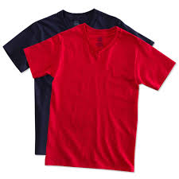

ROUND NECK

Main steps in the production of cloth are producing the fibre, preparing it, converting it to yarn, converting yarn to cloth, and then finishing the cloth. The cloth is then taken to the manufacturer of garments.
V NECK
Spinning evolved from twisting the fibres by hand, to using a drop spindle, to using a spinning wheel. Spindles or parts of them have been found in archaeological sites and may represent one of the first pieces of technology available.
COLLAR
The MFA was introduced in 1974 as a short-term measure intended to allow developed countries to adjust to imports from the developing world. Developing countries have a natural advantage in textile production.